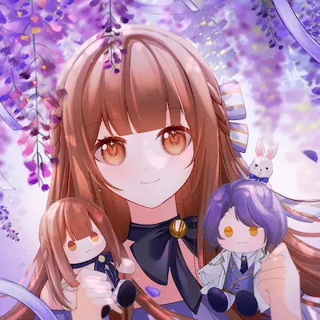
🐆⛄❄️♾️
#美男王子 #戀與深空 #未定事件簿 #chiikawa #NIJI EN
About Me
▾
稱呼? 叫我33最快
20+ 別管帳號名了 我只是取爽的www
私訊不在這支帳號 找我可以留言給我or這帳號訊息想到才會開..
版面組成:日常+廢文80% 夢向20%
廢話廢文偏多 交流隨意互相尊重、相處起來舒服就好 比較看電波相處
版上會發自己委託的夢圖跟現生日常 偶爾發點穿搭照片?
常爆言及髒話注意(自言自語比較口無遮攔一點) 介意者可能不適合當朋友 不適合我會直接刪掉/可直接刪掉我
相處模式...?
隨意輕鬆就好 介意雙向者可能不太適合(?) 但會努力交流互動 會視熟度調整互動頻率 以免太超過而踩到底線
不搞小團體/小圈圈 喜歡搞親友團啥的可能也不太適合認識 可以私聊交流~
不夢向交友及夢向互動(e.g. 人機留言誇誇、幫分享紀念圖等) 以按表符&留言交流互動為主 我就佛系XD
喜歡的東西? 夢向相關? 可能算多夢? 行為像夢女但有的又夢不起來?
美男王子 克拉維斯夢女 選拒同擔嫁 會自行花錢委託克拉單人圖><
未定事件簿 陸景和夢女(?...快棄夢ㄌ....) 選拒同擔嫁
戀與深空(日配黨!) 黎深鐵血單推 很喜歡黎但就是夢不起來XD 同擔嫁大歡迎!!!(然後一直快要被Kenji配的夏以晝騙走....)
chiikawa 桃媽 會黑小桃但是真的愛他XD
Main
▾
美男王子 克拉維斯(也愛聲優!!! Kenji我的神)
戀與深空 黎深
未定事件簿 陸景和
BangDream! 白金燐子 團推Ave Mujica & Roselia 團推部分包含聲優
Art by KiKi/Arics/铂屿州
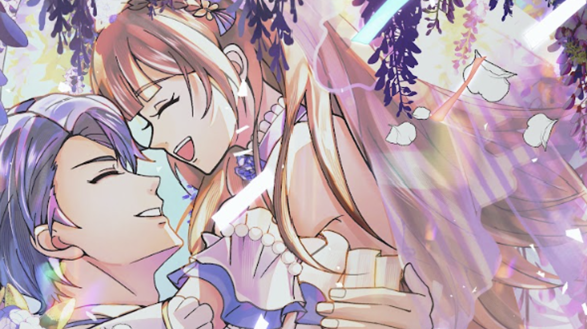
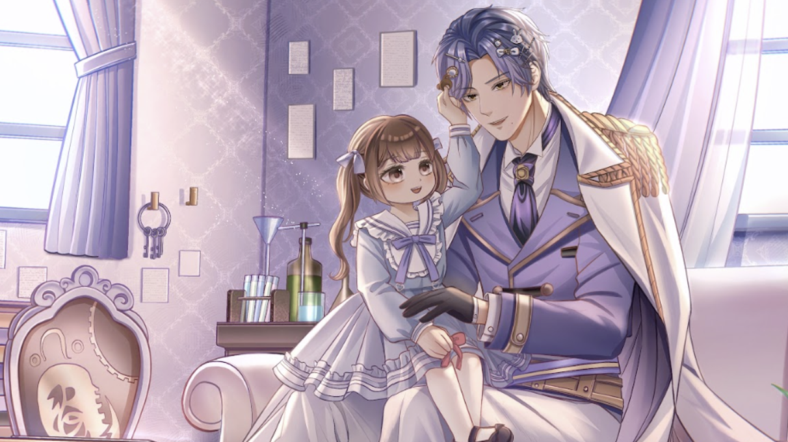
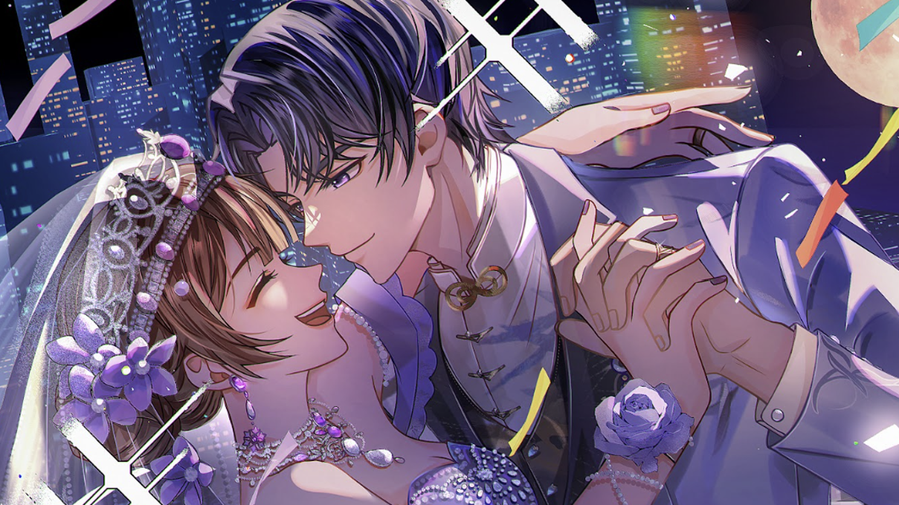
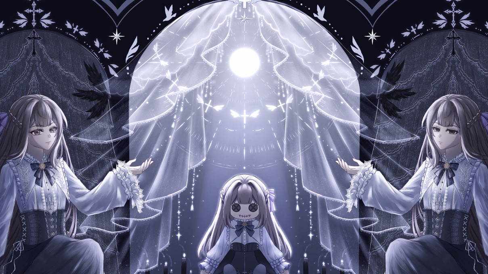
⚠️IMPORTANT
▾
強烈拒絕認識任何與立花凪(Lunette Grimoire/露涅特)/ナギ(mingying0106)關係交好or有任何共友/關係的人
曾經交好快10年過，因為私人原因無意再與對方有任何往來，審友較嚴格是保護自己，也請不要內鬼我或內鬼對方。
跟他是朋友的人我能保證我們電波是200%不合的 不好意思。(我相信物以類聚，有我沒他，有他沒我。)
無意認識20歲以下
未成年看過太多炎上事件 成年後再交流也不遲。
內鬼吃瓜仔
如題。
Others
▾
放圖快速明瞭(?) 列幾個印象比較深/近期喜歡的作品
歌塑世界(完全是因為Kenji才去看的....)
戰姬絕唱
光與夜之戀(太忙了玩不過來只能暫時淡坑...)
Happy tree friends
暮蟬悲鳴時(比起新版更愛舊版XD)
NIJI EN
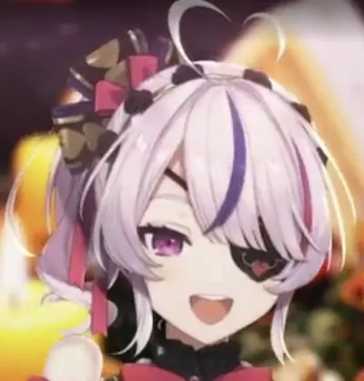
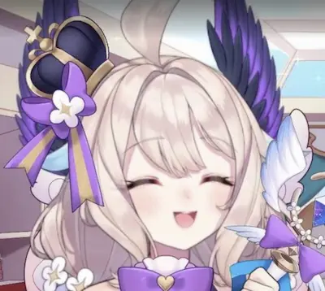
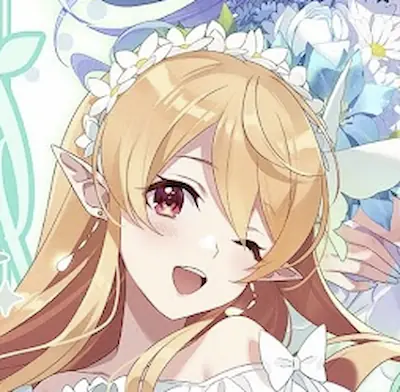
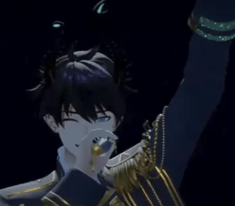
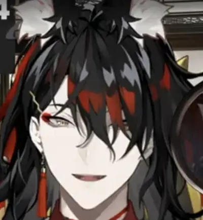
LoveLive!!
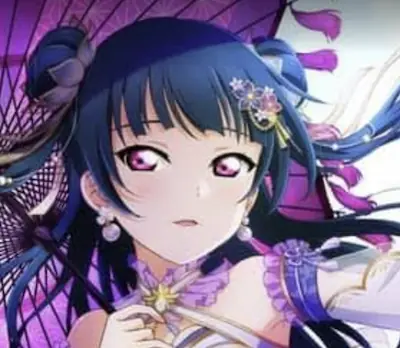
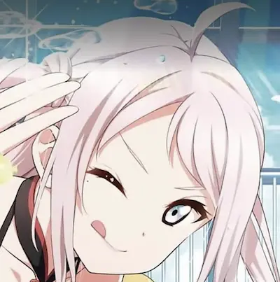
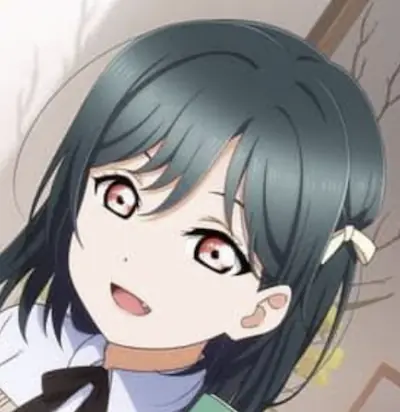
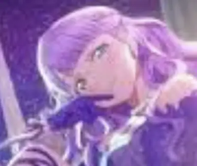
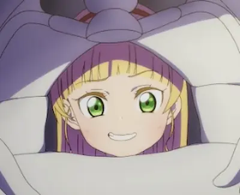
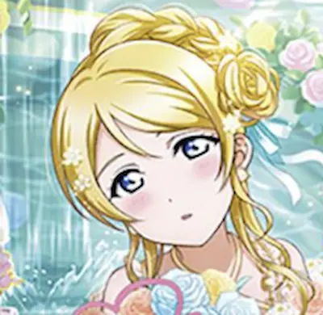
三次元
好像混入奇怪的東西了......??
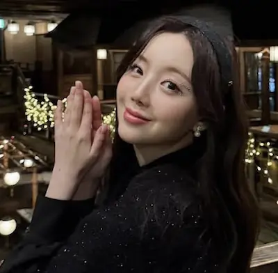
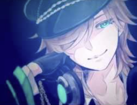